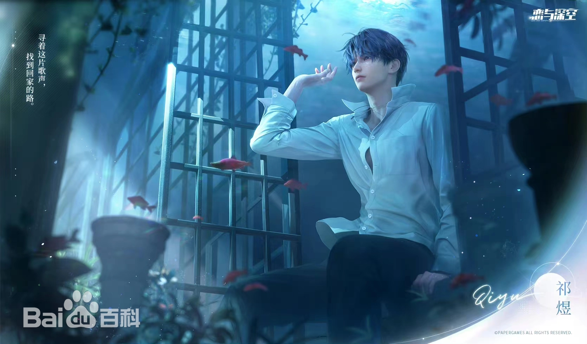
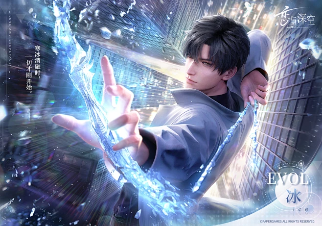
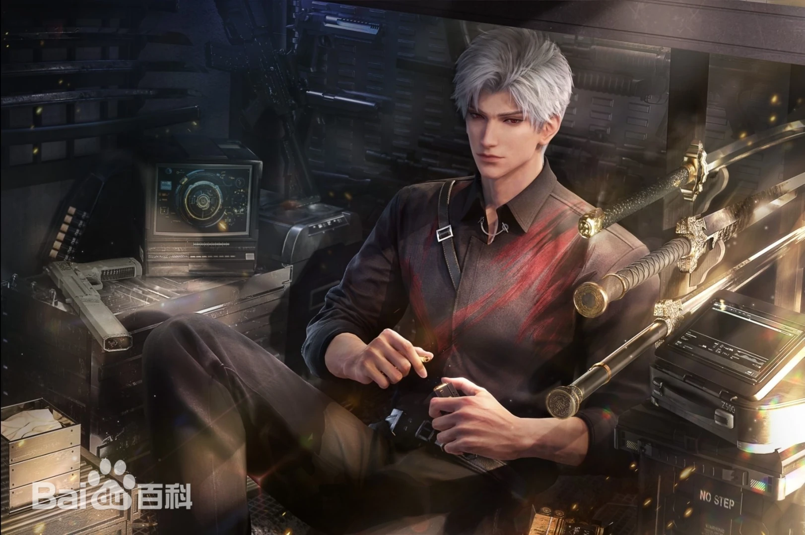

.jpg)
-
.jpg)
沈星回
沈星回，是一款由叠纸游戏研发的女性向3D游戏《恋与深空》中的男主角之一，真实身份是菲罗斯星的王子、王的继承人，也是菲罗斯星的首席圣剑骑士、回溯小组的队长。曾任临空市花浦区分局Evol特警，现任猎人协会的深空猎人，同时也是传说中的“光猎”。简介 神出鬼没、神龙见首不见尾的神秘深空猎人，只身一人就能摆平高危流浪体，战力天花板。 [4] 相貌衣着 银色头发，浅蓝色眼睛，高高瘦瘦，眉清目秀。日常装扮喜欢简洁舒适的服饰。 [4] 性格
反差、冷静、情绪稳定，很有耐心；佛系淡然、温柔安静、淡泊名利、追逐自由、悲悯生命，认为所有人都应该平等地拥有得知真相的权利，有时候有些天然呆，喜欢低碳而又平淡的生活，但在感情中是个占有欲很强但控制欲为0的人
-

祁煜
祁煜，出生自海洋文明“利莫里亚”，是利莫里亚的最后一任海神，现居临空市，主职业是艺术家。他的头衔有很多，是浪漫纯爱的利莫里亚小海神，是冷酷柔情潜行者，更是临空市才华横溢的大艺术家。 祁煜在幼年时期贪玩上岸，与"我"结缘。
少年时期在继承利莫里亚海神位置后，与“我”再次相遇，救"我"免祭品。为救故乡，也不愿牺牲“我”的生命，选择燃烧了自己的心进入沉眠。三万年后，菲罗斯星重逢，予"我"自由，共寻海神书。临空市再遇，祁煜助"我"查案，共历险，显人鱼真身。两人情感纠葛，艺术与神秘交织，命运多舛，终寻自由与真相。
-

黎深
毕业于天行大学医学院临床医学系，先后获得硕士学位和博士学位。后进入临空市Akso医院心脏外科中心。现任心脏外科中心主任医师、“Evol-Cardiac医学研究室”科研组长、天行大学医学院硕士生导师。 “你”少年时莫名消失的青梅竹马，半年前与“你”再度重逢，并成为“你”的主治医生。
在经历爆炸事件的几十天后，你因提前出院需要去医院复查。在办公室，黎深安慰你并告知你的奶奶留了一个盒子给你。你打开奶奶的盒子后，发现是关于自己的身体检测报告。黎深告诉你，他了解并不多，但你可以去极地找方院长详谈。
两周后，你在极地车站“偶遇”到了同去雪绒镇的黎深，黎深告诉你他来帮方院长做研究。因为列车的意外情况，你和黎深共同坐雪橇出发。路上遇到了方院长安排的接待人员“六饼”，黎深和你讲述了很多六饼相关的故事。
-

秦彻
秦彻是菲罗斯星有史以来悬赏金额最高的罪犯，也是唯 一一个从时空监狱里越狱成功的传说。越狱后以一己之力将穹羽星星主收服的妥妥帖帖，让星主取消星际关卡的警戒，并且开始对堡垒里的飞船进行清点，彻底掌控了穹羽星的力量，并在各领主提供的情报下得知“以太芯核”、“以太之眼”的下落，得到想要的情报后在离开穹羽星之际使用Evol将整个堡垒尽数摧毁，穹羽星自星主到全体领主无一人生还。在此期间，菲罗斯星的星际捕手穆叶，在秦彻成功越狱后率领其余捕手一直对其进行追捕，后在穹羽星发现了秦彻的踪迹并前往追捕，在现场发现了与当年秦彻逃离菲罗斯星的现场遗留下的物质相同，由此判断秦彻洗劫了整个星球的财富后已然离去。
离开穹羽星的秦彻在星际航行，船舱里随之浮现出巨大的全息的星际地图，漂浮在半空中的球体开始剧烈震荡，里面的微光冲破球体，四散的地图间，最后再慢慢聚拢指向其中一颗小小的星球。地图随之被放大，聚焦那个被“以太之眼”注视的目的地，它四周的全息颗粒不断起伏，显示正在处于剧烈的能量波动中。